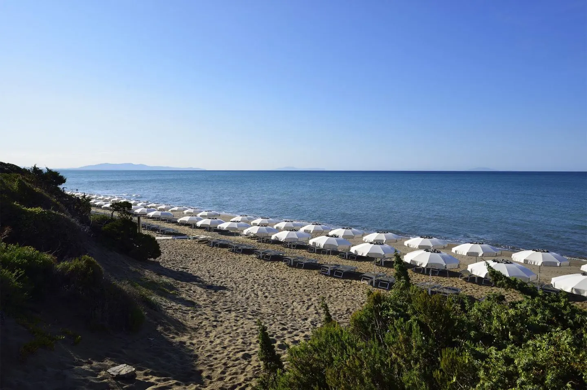

The ACDL is a summer school, which, as the name implies, focuses on data science and to a larger extent machine learning. I recently had the pleasure of attending for the first time. This year it was held on the Tuscan coast, and attracted a mostly European audience with many participants from Italy.

The course revolves around the talks, with subjects ranging from clustering and network analysis to large language models. LLM hype seems to be everywhere, and took up roughly half of the lecture time. The talks were mostly technical, and given on a phd student (the majority of the attendees) level. Here follows a list of some of my favorite talks from the event.
Multimodal Foundation Models
This series of lectures was the highlight of the entire course for me, due to its relevance to my work. Gabriel discussed the architecture of multimodal models, as well as techniques for combining and using pretrained backbones in multimodal models. In particular, the bunny series of models is something I plan to look into more in the future.
Machine Learning for Modeling and Control of Complex Systems
This series was very wide-ranging, but often touched on Koumoutsakos's work with fluid mechanics. I wasn't able to follow it in its entirety but still found it very interesting. His work on experience replay is something I will have to come back to.
Diffusion Models
I like diffusion models and have played around with them quite a bit. But the math behind them is a little more complex than what I am used to, so I was happy to attend this introductory talk. On a side note this blog post is still the best introduction to diffusion models that I'm aware of.
Fusing Machine Learning and Optimization for Engineering
Optimization is not something I understand very well (yet), but this series of talks was nonetheless great. Pascal spoke about the challenges of optimizing an energy grid, and the unique methods that have been developed to do this.
Overall
In my opinion, one of the best parts of attending these events are the people you meet. It's quite special to meet so many other people who share the same interests as you and are happy to discuss their research (where else can you discuss optimization algorithms on the beach?). I would certainly recommend that you seek out a similar event if you've never done so before. Here is the website for next years event. This search engine was how I found the ACDL and might also be of use to you.
← Back to all posts